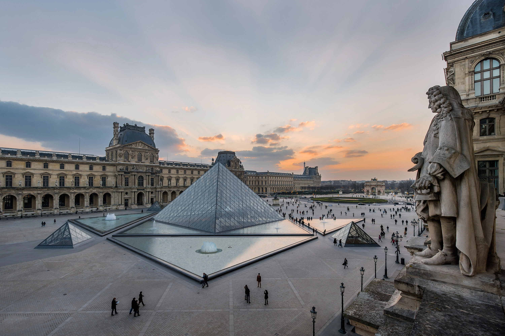

Francia
1. Torre Eiffel
La Torre Eiffel es uno de los monumentos más famosos del mundo y un símbolo icónico de París, Francia. Se encuentra en el extremo oeste del campo de Marte, a orillas del río Sena.
La torre fue construida en 1889 para la Exposición Universal y es la estructura más alta de París, con una altura de 324 metros.
Se puede subir a la cima de la Torre Eiffel en ascensores y disfrutar de una impresionante vista panorámica de París.
Se recomienda reservar los boletos con anticipación para evitar largas filas, especialmente durante los meses de verano. Además, asegúrese de vestirse cómodamente para subir las escaleras o esperar en la fila para subir en los ascensores
En lo personal yo nunca subí a la cima de la torre por que prefierí subir al arco (que era gratis) y ver la vista de paris con la torre. Sin embargo, si tenes el tiempo y queres subir me dijeron que la vista es muy linda y es una gran experiencia.
Recomiendo mucho comprar algo para comer en los supermercados cercanos y hacer un picnic en el campo de marte, hay todo un espacio con pasto para hacerlo.
En lo personal yo nunca subí a la cima de la torre por que prefierí subir al arco (que era gratis) y ver la vista de paris con la torre. Sin embargo, si tenes el tiempo y queres subir me dijeron que la vista es muy linda y es una gran experiencia.
Recomiendo mucho comprar algo para comer en los supermercados cercanos y hacer un picnic en el campo de marte, hay todo un espacio con pasto para hacerlo.
2. Arco del Triunfo
El Arco del Triunfo es uno de los monumentos más emblemáticos de París, Francia. Se encuentra en la plaza Charles de Gaulle, en el extremo oeste de la famosa avenida de los Campos Elíseos.
El arco fue construido en 1806 para conmemorar las victorias militares de Napoleón Bonaparte y es uno de los lugares turísticos más visitados de París.
Se puede subir a la cima del arco para disfrutar de una vista panorámica de París. También se puede visitar la Tumba del Soldado Desconocido, que se encuentra debajo del arco y honra a los soldados franceses que murieron en la Primera Guerra Mundial.
Dispone de un ascensor y rampas para subir hasta la exposición, pero solamente lo podrán utilizar las personas con movilidad reducida.
Recomiendo ir al atardecer y ver la primera prendida de luces de la torre desde arriba. Tener en cuenta el tiempo de demora para hacer la fila y subir, en verano suele haber más gente.
La entrada tiene un costo de 13 euros. Si sos de la comunidad europea y menor de 25 años podes ingresar gratis.
Recomiendo ir al atardecer y ver la primera prendida de luces de la torre desde arriba. Tener en cuenta el tiempo de demora para hacer la fila y subir, en verano suele haber más gente.
La entrada tiene un costo de 13 euros. Si sos de la comunidad europea y menor de 25 años podes ingresar gratis.

3. Museo Louvre
El Museo del Louvre es uno de los museos más famosos del mundo y una visita obligada para cualquier turista que visite París. Es el hogar de una de las colecciones más grandes y diversas de arte del mundo, desde la antigüedad hasta el siglo XIX.
Cuando visites el Louvre, es importante planificar con anticipación. Hay más de 35,000 obras de arte en exhibición, así que asegúrate de elegir las obras que queres ver con anticipación y planificar tu visita acorde.
Una buena opción es descargar la aplicación oficial del Louvre, que incluye mapas y guías de audio. Un de las obras más famosas que puedes encontrar en el Louvre es la Mona Lisa de Leonardo da Vinci. Te recomiendo que vayas temprano para evitar las multitudes.
También vale la pena explorar las galerías de antigüedades egipcias, griegas y romanas, donde puedes ver momias, estatuas de dioses y guerreros, y mosaicos antiguos. Otra recomendación es visitar el Louvre en una noche de miércoles o viernes, ya que el museo tiene horarios extendidos y música en vivo. Si quieres evitar las multitudes y experimentar el museo de manera más exclusiva, también puedes reservar una visita privada o una visita guiada.
Una buena opción es descargar la aplicación oficial del Louvre, que incluye mapas y guías de audio. Un de las obras más famosas que puedes encontrar en el Louvre es la Mona Lisa de Leonardo da Vinci. Te recomiendo que vayas temprano para evitar las multitudes.
También vale la pena explorar las galerías de antigüedades egipcias, griegas y romanas, donde puedes ver momias, estatuas de dioses y guerreros, y mosaicos antiguos. Otra recomendación es visitar el Louvre en una noche de miércoles o viernes, ya que el museo tiene horarios extendidos y música en vivo. Si quieres evitar las multitudes y experimentar el museo de manera más exclusiva, también puedes reservar una visita privada o una visita guiada.
